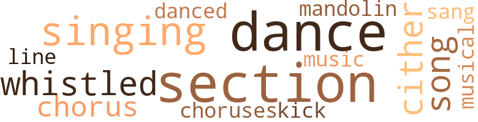
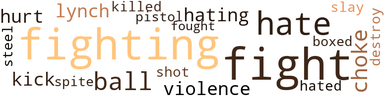

You're Not Alone, by Gordon, Eugene (1940)
31 music-related terms matched in this text.
Most frequent terms in this topic: dance (5); section (5); singing (3); chorus (2); cither (2)
chorus.n.01
Definition: any utterance produced simultaneously by a group
| word | sentence |
|---|---|
| chorus | That song Paul Robeson did with a chorus on the radio . |
| chorus | And the Jewish chorus . |
| choruses | And glee clubs and choruses . |
dance.n.01
Definition: an artistic form of nonverbal communication
| word | sentence |
|---|---|
| dance | " You did n't go to a dance after that long trip ! |
| dance | " It was n't an ordinary dance , " Jim said . |
| dance | Cultural activities cover also dramatic , musical and dance groups . |
| dance | And a colored dance group . |
| dances | But we do have balls and banquets , dances , concerts , and entertainments , whenever the different lodges want them . |
| dance | Oh , they do all sorts of things - hold important conventions , where they discus youth problems ; conduct musical and dance groups , take part in sports , games , plays . |
dance.v.03
Definition: skip, leap, or move up and down or sideways
| word | sentence |
|---|---|
| danced | And a Virginia Reel danced by colored and white , together , all wearing those beautiful old Colonial costumes . |
kick.v.04
Definition: kick a leg up
| word | sentence |
|---|---|
| kick | Well , imagine how the manager here must kowtow to him - the same manager who wanted , and still wants , to kick us out . |
mandolin.n.01
Definition: a stringed instrument related to the lute, usually played with a plectrum
| word | sentence |
|---|---|
| mandolin | Then there was a mandolin orchestra , with colored boys in it . |
music.n.01
Definition: an artistic form of auditory communication incorporating instrumental or vocal tones in a structured and continuous manner
| word | sentence |
|---|---|
| music | . . . And lights and colored streamers and confetti and laughter and noise and music and - " " Sounds like some of those Mardi Gras balls we used to go to in New Orleans , " commented Uncle Bob . |
musical.n.01
Definition: a play or film whose action and dialogue is interspersed with singing and dancing
| word | sentence |
|---|---|
| musical | Oh , they do all sorts of things - hold important conventions , where they discus youth problems ; conduct musical and dance groups , take part in sports , games , plays . |
section.n.01
Definition: a self-contained part of a larger composition (written or musical)
| word | sentence |
|---|---|
| Section | Now , the sick benefits are $ 4 , $ 6 , $ 8 or $ 10 a week , according to this same Section 90 . |
| section | But if they want to be together with friends who speak their tongue , then each language section , as they 're called , may have its own lodge . |
| section | In its own lodge , " Jim added , " each language section carries on business in its own tongue . " |
| section | I 've already told you a Negro woman has charge of the English-speaking section . " |
| section | " First I was in the kid group , then in the youth section , and now you want to put me with Aunt Martha . " |
| section | At 16 they graduate into the adult section . " |
sing.v.02
Definition: produce tones with the voice
| word | sentence |
|---|---|
| sang | A fine baritone sang the leading part in ' A Ballad for Americans . ' |
singing.n.01
Definition: the act of singing vocal music
| word | sentence |
|---|---|
| singing | But when Jim asked me to go to that fiesta I just could n't see myself carrying on socially with them - dancing and singing and eating and drinking . |
| singing | It was singing when we got there . |
| singing | And such singing ! |
song.n.01
Definition: a short musical composition with words
| word | sentence |
|---|---|
| Song | " Printed 10,000 copies of Langston Hughes ' little volume of poems , ' A New Song , ' and taken the poet himself on a tour of the country . " |
| song | That song Paul Robeson did with a chorus on the radio . |
tune.n.01
Definition: a succession of notes forming a distinctive sequence
| word | sentence |
|---|---|
| line | Might be a good idea for you to do a little thinking along this line yourself . " |
whistle.v.01
Definition: make whistling sounds
| word | sentence |
|---|---|
| whistled | Jim whistled , softly , parts of " A Ballad for Americans . " |
| whistled | " Whew ! " whistled Uncle Bob . |
zither.n.01
Definition: a musical stringed instrument with strings stretched over a flat sounding board; it is laid flat and played with a plectrum and with fingers
| word | sentence |
|---|---|
| cither | " Nothing for me , cither , " Uncle Bob said . |
| cither | " With all due respect to your ' true fraternalism , ' that gives you such a ' real understanding ' of the Negro question , I do n't need any big boys , or little ones , cither , to tell me to stay away from places where I 'm not wanted . |
63 violence-related terms matched in this text.
Most frequent terms in this topic: fight (13); fighting (13); hate (7); choke (3); balls (3)
box.v.03
Definition: engage in a boxing match
| word | sentence |
|---|---|
| boxed | Still walking within Central Park and parallel with Fifth Avenue , they mounted steps that took them over the crest of a knoll and brought them within view of the lofty jagged skyline by which the Park was boxed in on three sides . |
destroy.v.04
Definition: put (an animal) to death
| word | sentence |
|---|---|
| destroy | Because I just ca n't get it through my head that it 's any use to keep on fighting to have people take you in and treat you like a brother - or sister , " with a suggestion of humor , " when they 've been beating you with their Ku Klux Klaus , lynching yon , burning you at the stake , and trying to destroy you from the face of the earth . |
fight.n.02
Definition: the act of fighting; any contest or struggle
| word | sentence |
|---|---|
| Fighting | " You know , " Peter said , " the rich people , the bigshots , lie awake nights trying to think of ways to keep the great masses of the people divided and squabbling and Fighting among themselves , because there 's nothing the bigshots are more afraid of than all the people down below coming together and joining up on a common good-and-welfare program . " |
| fighting | " And if some of us must die fighting , die together . |
| fighting | " And just to be seen in places where you 've a right to be and yet are not wanted is a form of fighting , " Jim said . |
fight.n.05
Definition: a boxing or wrestling match
| word | sentence |
|---|---|
| fight | " You can , pretty nearly , I guess , " Uncle Bob said glumly , " if you 're willing to put up a fight . " |
| fight | " I can see you 're right , there , " Uncle Bob said slowly , " but fight , fight , fight ! |
| fight | " I can see you 're right , there , " Uncle Bob said slowly , " but fight , fight , fight ! |
| fight | " In other words , fight . " |
| fight | Each of us has pledged to take our stand with the people and for the people , in a fight to maintain a nation for the people , and will everywhere and at all times defend democracy . |
| Fights | Fights for the anti-lynch bill , the National Youth Act , and legislation to protect women . |
| fights | " Maybe you could tell us of some of these fights for Negro rights , as you call 'em , " Aunt Martha pursued . |
fight.v.02
Definition: fight against or resist strongly
| word | sentence |
|---|---|
| fighting | Who wants to be fighting all the time ? |
| fight | " Believe me , I 'd fight , " she said stoutly . ' |
| fight | He may be terrifying but you 've got to face him and fight . " |
| fighting | Because I just ca n't get it through my head that it 's any use to keep on fighting to have people take you in and treat you like a brother - or sister , " with a suggestion of humor , " when they 've been beating you with their Ku Klux Klaus , lynching yon , burning you at the stake , and trying to destroy you from the face of the earth . |
| fighting | " The reason you feel so bitterly about this thing which we all hate - this prejudice , this oppression - is , I think , that you and Uncle Bob think of yourselves as fighting it all alone . " |
| fighting | " But you 're not fighting it all alone . |
| fighting | There are thousands and thousands of people fighting it with you . |
| fighting | Especially unfortunate that you do n't know about the thousands and thousands of whites , some of whom you 'd probably hate on sight if you met them outside on the street , who 're fighting this monster , as Peter put it . " |
| fight | The point is that in the I.W.O. , where we learn in the very act of putting over our program just what it means to fight for Negro rights , we lose that feeling of despair , of - of . . . . |
| fighting | Because we 're working with , fighting with , living with , others who think just as we do . |
| fight | " Yes , and fight together , " Jim said . |
| fight | The Negro is misled into sneering at Jews and foreigners , because these people , the Jews and the masses of foreign-born people , might easily be won over to fight on the Negro 's side . " |
| fight | Especially to fight race prejudice . " |
| fight | A white member of the I.W.O. is supposed to fight for the rights of Negroes as a matter of principle . " |
| fought | We 've always fought for health and social legislation . . . . |
| fight | But how can we fight for the rights of the Negro people as lodge brothers and sister unless we understand the Negro people 's most fundamental problems ? " |
| fighting | The point is that we mast know these facts about the history of the Negro people , if we are sincere in what we say about fighting for their rights . " |
| fighting | Now , this necessary unity conies from understanding , and understanding comes from study and ------ " " And especially from fighting shoulder to shoulder for those things we consider worth fighting for , " Jim said . |
| fighting | Now , this necessary unity conies from understanding , and understanding comes from study and ------ " " And especially from fighting shoulder to shoulder for those things we consider worth fighting for , " Jim said . |
| fighting | '' Especially from working together and fighting together . " |
gag.v.06
Definition: cause to retch or choke
| word | sentence |
|---|---|
| choke | " I 'd choke on anything I tried to eat in this place , " Aunt Martha said . |
| choke | " I 'd choke . " |
| choke | " Well , I 'll eat mine , " Mary declared , " and it wo n't choke me , either . " |
hate.v.01
Definition: dislike intensely; feel antipathy or aversion towards
| word | sentence |
|---|---|
| hate | " I hate being humiliated in public , " Aunt Martha complained . |
| hate | " We all hate it , " Jim agreed . |
| hate | And I guess , " she added dejectedly , " we ll be humiliated again , as much as we hate it . " |
| hating | How can I help hating such people ? " she asked fiercely . |
| hate | Especially unfortunate that you do n't know about the thousands and thousands of whites , some of whom you 'd probably hate on sight if you met them outside on the street , who 're fighting this monster , as Peter put it . " |
| hate | " Why this peculiar distinction , since you hate them all ? " |
| hate | Sometimes we do n't because we really do hate the whites . |
| Hating | Hating the Jews , " he said , " and the foreign-born is one example . " |
| hate | Well , I feel I hate all whites . " |
| hated | " Well , I would n't say I hated white people , " she said . |
injury.n.01
Definition: any physical damage to the body caused by violence or accident or fracture etc.
| word | sentence |
|---|---|
| hurt | He seemed hurt . |
kick.v.04
Definition: kick a leg up
| word | sentence |
|---|---|
| kick | Well , imagine how the manager here must kowtow to him - the same manager who wanted , and still wants , to kick us out . |
kick_back.v.02
Definition: spring back, as from a forceful thrust
| word | sentence |
|---|---|
| kick | Likely to kick off any time , you see . |
kill.v.10
Definition: cause the death of, without intention
| word | sentence |
|---|---|
| killed | Indoors , they breathe disease or death from their unhealthful surroundings , and outdoors they 're killed or crippled in the traffic . " |
lynch.v.01
Definition: kill without legal sanction
| word | sentence |
|---|---|
| lynch | Who is it that make up the mobs that lynch and burn Negroes ? |
| lynch | When I think of what they did to us in slavery and how they treated our boys in the World War - and of how they treated the colored Gold Star Mothers - and the way they lynch us . . . . |
malice.n.01
Definition: feeling a need to see others suffer
| word | sentence |
|---|---|
| spite | " But I 'd say you could make the youth division in spite of being of junior size . " |
murder.v.01
Definition: kill intentionally and with premeditation
| word | sentence |
|---|---|
| slay | " I could slay at the men 's Y. " " All right with me , " Aunt Martha agreed . |
musket_ball.n.01
Definition: a solid projectile that is shot by a musket
| word | sentence |
|---|---|
| balls | . . . And lights and colored streamers and confetti and laughter and noise and music and - " " Sounds like some of those Mardi Gras balls we used to go to in New Orleans , " commented Uncle Bob . |
| balls | lie got fresh cups of coffee and the four sat chatting about New Orleans and March Gras balls and last night 's fiesta . |
| balls | But we do have balls and banquets , dances , concerts , and entertainments , whenever the different lodges want them . |
| ball | " I 'm still giddy from that ball he took me to last night . |
pain.v.02
Definition: cause emotional anguish or make miserable
| word | sentence |
|---|---|
| hurt | " They would n't hurt my feelings any by trying to keep me out of their lodges . " |
pistol.n.01
Definition: a firearm that is held and fired with one hand
| word | sentence |
|---|---|
| pistol | Another followed , pointing a toy pistol and shouting " Bang ! |
shoot.v.02
Definition: kill by firing a missile
| word | sentence |
|---|---|
| shot | She shot him a quick glance . |
sword.n.01
Definition: a cutting or thrusting weapon that has a long metal blade and a hilt with a hand guard
| word | sentence |
|---|---|
| steel | " Where men have dangerous job , as in mines and steel mills , they are discriminated against , too . |
violence.n.01
Definition: an act of aggression (as one against a person who resists)
| word | sentence |
|---|---|
| violence | " And you know , and I know , Aunt Martha , that the rich whiles , through their books , their newspapers , their radios and their movies , organize and incite to violence the poor , the backward , the prejudiced whites against the Negroes . |
| violence | So not only do they organize violence but they lead it , these fine millionaires . |
9 religion-related terms matched in this text.
Most frequent terms in this topic: Jews (5); God (1); heaven (1); religion (1); Saint (1)
eden.n.01
Definition: any place of complete bliss and delight and peace
| word | sentence |
|---|---|
| heaven | Elks , Masons , Odd Fellows , Knight of Pythias , Saint Luke , some kind of Fishermen , and heaven knows how many more . " |
god.n.03
Definition: a man of such superior qualities that he seems like a deity to other people
| word | sentence |
|---|---|
| God | They tell us God did n't intend for the ' races ' or the different nationalities to mix . |
jew.n.01
Definition: a person belonging to the worldwide group claiming descent from Jacob (or converted to it) and connected by cultural or religious ties
| word | sentence |
|---|---|
| Jews | " I 'll say it 's unique , " Aunt Martha snorted , " with all those Polaks and Jews and white people and Negroes all mixed up together . " |
| Jews | The Negro is misled into sneering at Jews and foreigners , because these people , the Jews and the masses of foreign-born people , might easily be won over to fight on the Negro 's side . " |
| Jews | The Negro is misled into sneering at Jews and foreigners , because these people , the Jews and the masses of foreign-born people , might easily be won over to fight on the Negro 's side . " |
| Jews | Hating the Jews , " he said , " and the foreign-born is one example . " |
| Jews | " One thing 's sure , " Jim said , smiling at Aunt Martha , " and that is you 'd never speak of ' Jews and Polaks and white people and Negroes , ' or ' white people and foreigners , ' as you do , if you were in the I.W.O. " He smiled again , placatingly . |
religion.n.01
Definition: a strong belief in a supernatural power or powers that control human destiny
| word | sentence |
|---|---|
| religion | " The I.W.O. has absolutely no restrictions as to race or nationality , any more than it has as to sex or religion or politics . |
saint.n.02
Definition: person of exceptional holiness
| word | sentence |
|---|---|
| Saint | Elks , Masons , Odd Fellows , Knight of Pythias , Saint Luke , some kind of Fishermen , and heaven knows how many more . " |